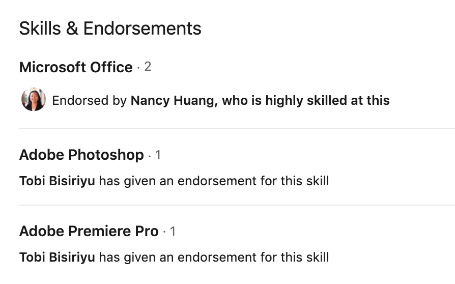
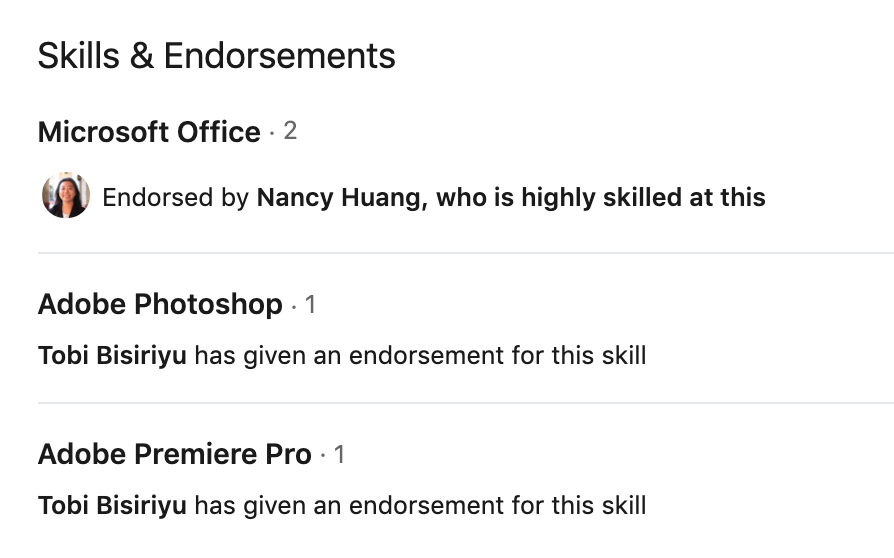
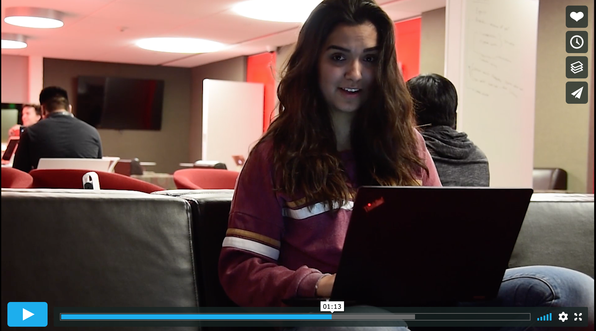
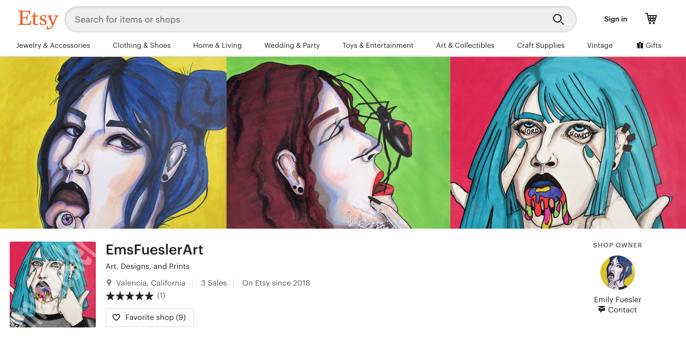

Emily (Ems) Fuesler is a junior at the University of Southern
California
double majoring in the School of Cinematic Arts and the Roski School
of
Art Design.
From her Linkedin page, I can see the Emily has 122 connections and has been an
Orientation Advisor for one year. Emily is skilled in:
 

Emily lists her skills on her website:
Emily's also active on vimeo and has over five different videos posted. Here is a screenshot of her USC interview and very first video on the vimeo site.
From Emily's Instagram, I see that she classifies herself as an:
Ems sells her art online with an Etsy shop. Many of these prints are also featured on her Instagram.
 If you are a true of a fan as I am when it comes to my lady Emily Fuesler than you have to buy her art to support her dreams.
I've bought up her entire store already with the hopes that I'll get to meet her one day, but the restraining order against me is making that really difficult.
“I didn’t really understand why we had to watch movie trailers before Playboi
Carti came out,” said Emily Fuesler, a freshman majoring in art.
“Playboi Carti was really cool [and] he got people really crazy and
excited.”
Emily is a super cool cat who is using both of her degrees to advance
quickly in the industry. She is very passionate about art and expressing her creativity.
I am excited to see where she goes and the impact she will make in her lifetime.
I also wish I could make this website as cool and chic as she is but alas I
am only her superfan
and not her in the flesh or in my code.